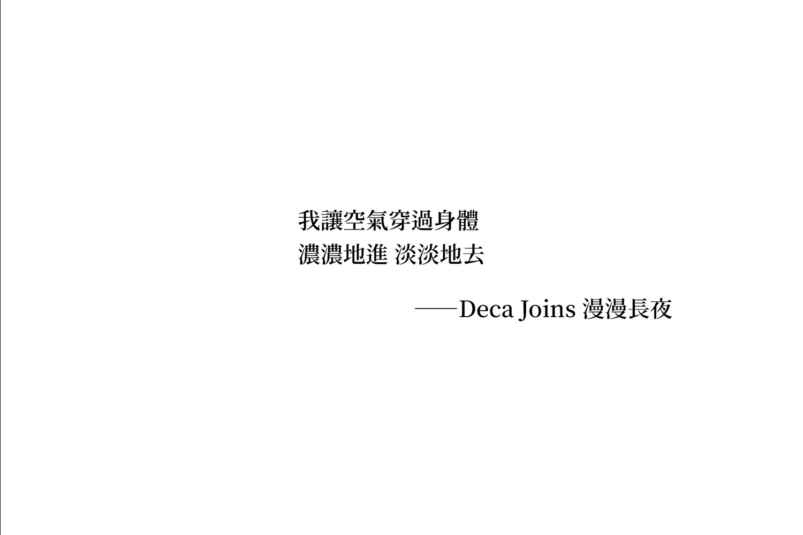
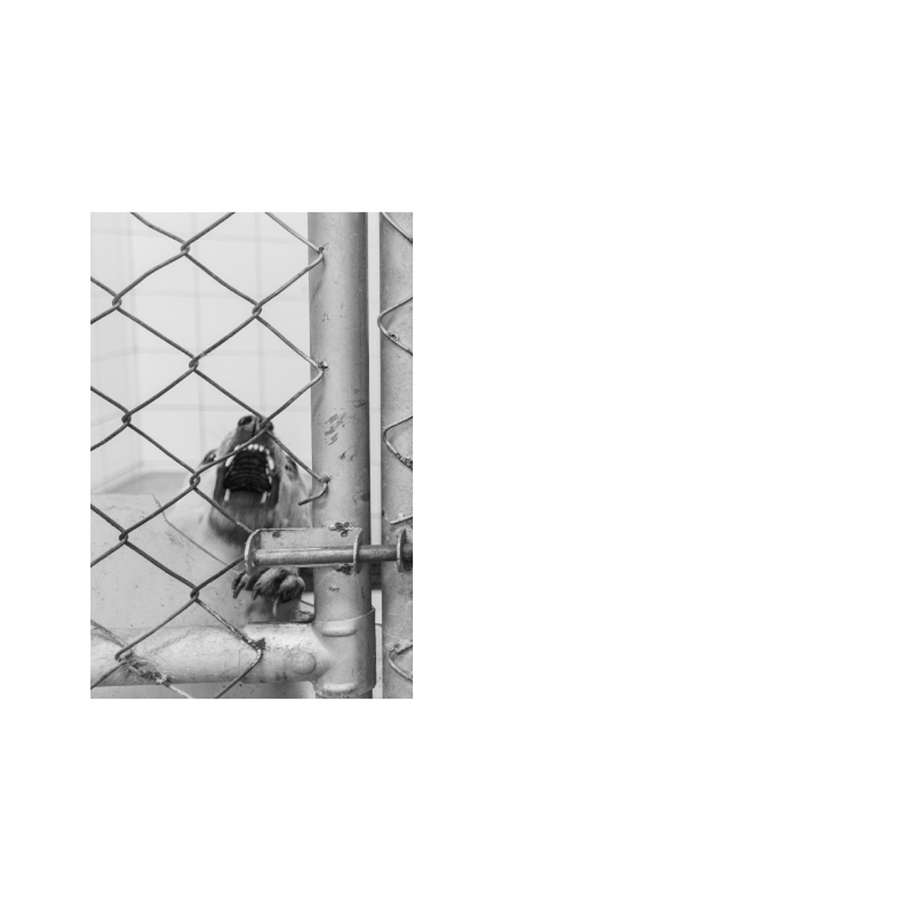

|
《17・18》 《18・19》  
《Seeing Through Emotions》 
|
17・18 / 18・19 / Seeing Through Emotions, 杜可筠 @k.y.t____ 《17・18》 懂事以來就沒見過底片相機了，費了一番功夫搞懂底片成相的原理和底片相機的構造，在第一台數位化單眼相機問世的29年後，年17的我因為種種原因，在網路上買了一台二手的底片單眼，活了近18年第一次有點意識到自己觀看世界的方式。謹以此本篇幅不大的攝影書，紀念17歲的自己，和她那充滿好奇心的雙眼和純粹的靈魂。 view on issuu 《18・19》 《18・19》並不是《17・18》的續集，深深相信每個時期 / 階段的自己都是獨立但不互斥的，硬要說的話大概是劇情獨立、可以分開閱讀的系列作。18歲前半的自己活得很用力、不斷向外探尋，後半的自己突然不知道為何要那麼用力了、開始向內思索，但不管是向外亦或是向內，面對的課題都是：真實。 view on issuu 《Seeing Through Emotions》 《Seeing Through Emotions》是16歲的我最重視的計畫，但最後收錄的照片幾乎都是17歲的我拍的。我把自己徹底打碎，成為一片又一片的碎片之後，才得以一趟又一趟回到動物之家、再一次又一次將觀景窗放到眼前、按下一下又一下的快門。19歲的我再回來看它，稚嫩而真摯的語言，19歲的我絕對不會這樣翻譯、大概也不會這樣編排，儘管對自己總是挑惕，看到最後我卻哭了，我看到妳了，謝謝16歲的我。 view on issuu _____ view on instagram |